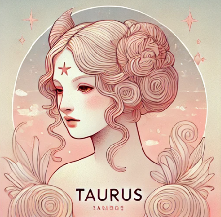
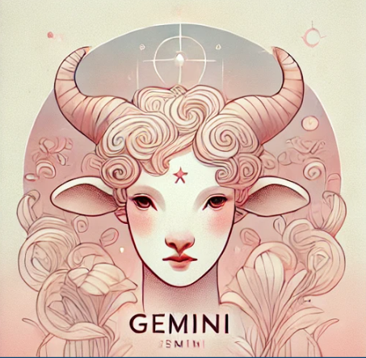
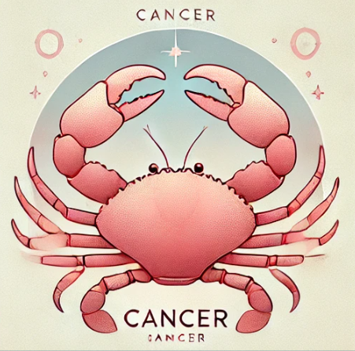

Tüm Burçlar
- Koç
- Boğa
- İkizler
- Yengeç
- Aslan
- Başak
- Terazi
- Akrep
- Yay
- Oğlak
- Kova
- Balık
Günün Şanslı Burçları
Koç Burcu

Boğa Burcu
İkizler Burcu
Yengeç Burcu
Bugün kendinizi enerjik ve yaratıcı hissedeceksiniz. Girişimlerinizi önceliklendirin.
Bazı konularda beklenmedik gelişmelere açık olun.
Unutmayın: Kendinize olan güven, başarıya giden yolun anahtarıdır.
Günün Alıntısı
“Astroloji, ruhumuzun evrenle uyumunu keşfetmemize yardımcı olur.”
Göz Atabilecekleriniz
Burç Özellikleri Tablosu
| Burç | Element | Özellikler |
|---|---|---|
| Koç | Ateş | Cesur, Enerjik |
| Boğa | Toprak | Sabırlı, Güvenilir |
| İkizler | Hava | Zeki, İletişimci |
| Yengeç | Su | Duygusal, Şefkatli |
| Aslan | Ateş | Karizmatik, Lider |
| Başak | Toprak | Analitik, Detaycı |
| Terazi | Hava | Adaletli, Zarif |
| Akrep | Su | Tutkulu, Gizemli |
| Yay | Ateş | Macera Dolu, Felsefi |
| Oğlak | Toprak | Disiplinli, Azimli |
| Kova | Hava | Özgün, İnsancıl |
| Balık | Su | Hayalperest, Şefkatli |